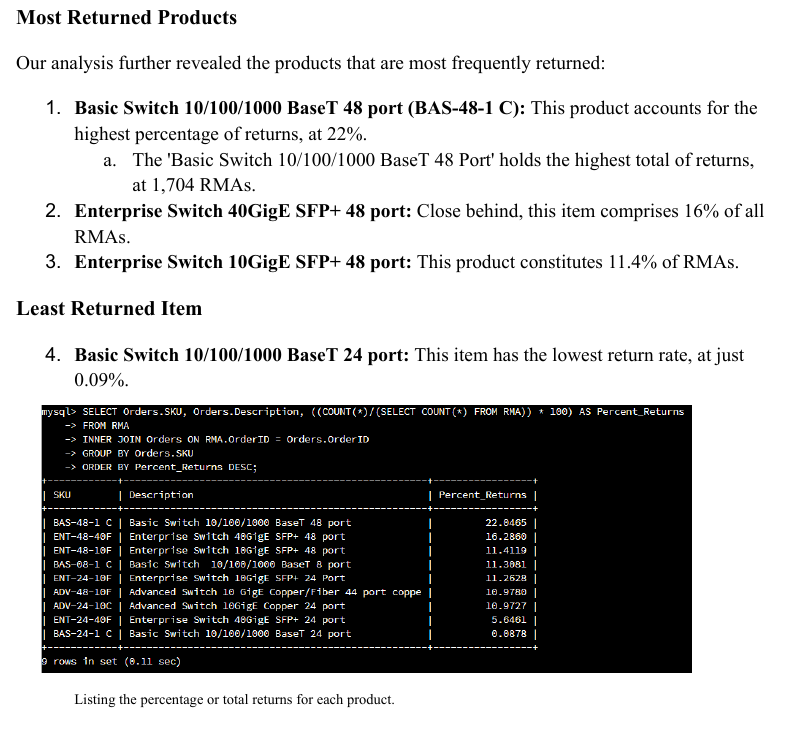
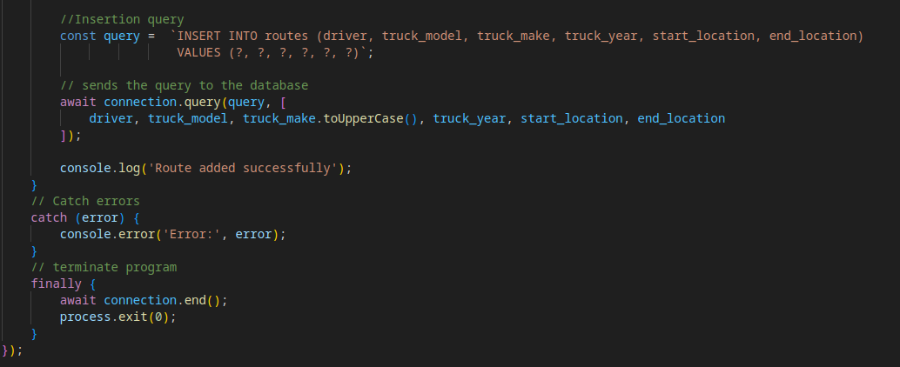
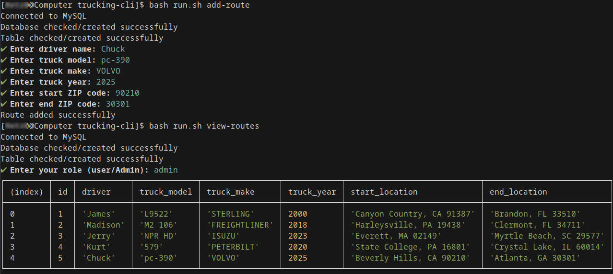
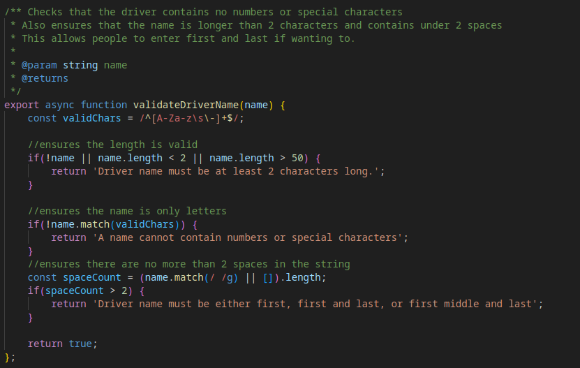
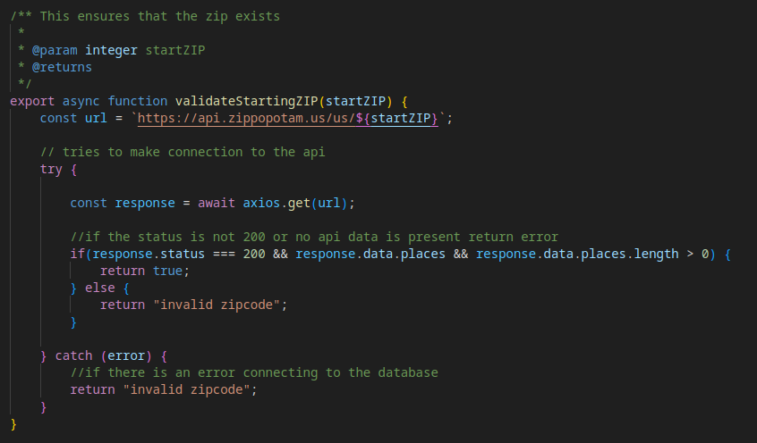
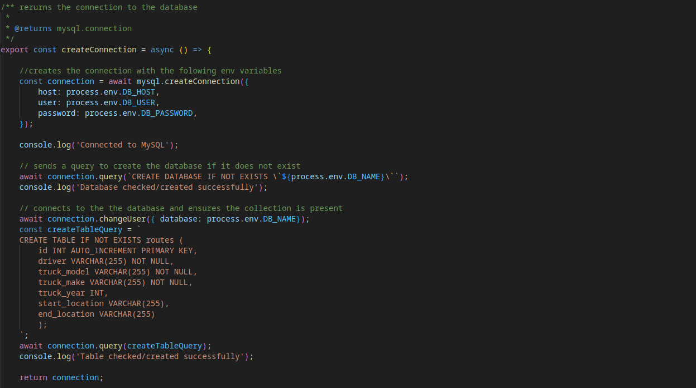

Assessing the artifact
I chose this database project because I wanted to get more practice with
MySQL. My
first
step was to assess what the
original projects were. In this initial project, we had a document where we posted images of us
executing various operations on an RMA database.
We performed all of these commands through the MySQL's CLI rather than crafting programmatic
queries. Our main goal for this project was
to showcase our ability to look up information for analyzing what it represented. Our queries
had to be methodical as to limit noise in the data sets.
This brings me to the enhancement of this project. My goal with this was to take the
knowledge I learned and create a command line interface to manage data of my own.
I wanted to learn how to create queries in JavaScript so that I can use a command manager to
easily create, read, update, and delete items.

Creating Test Queries
The first step I took in this enhancement was to ensure that I can write each of the
commands that I will be using. More importantly,
I needed to ensure that my program was connecting to the database and properly working. I ran
into problems initially with the DB,
this was due to the fact that my Linux distro (Arch) has its own version of MySQL. This was
called MariaDB,
Luckily it worked exactly the same. Eventually I created this file that handled the connection
to the database for each of my commands.

Making Commands and User Input
Once I set up the DB connecting, I needed to start working on the user experience. For
this, I found two node packages, Commander and Prompts from Inquirer.
Commander was crucial for creating the proper command experience, this allowed me to string
together my commands.
For my base command I never went further than using ./run.sh but afterward you select an action
(add, delete, search and view routes).
Commander was helpful for organizing my commands and also made it easy to make a '-help' flag.
The second package, inquirer/prompts, was beneficial for inquiring data from the user.
This package also became helpful for implementing my input validation I mentioned earlier.

Validating User input
Next, I wanted to make the command line experience as you would expect it, with input
validation.
Nobody wants to run a command that returns errors rather than messages explaining the
discrepancies. First, I placed character limits on each of the fields.
For the driver name, I only allowed alphabetical characters. The vehicle make had to be
alphanumeric, the model needed to consist of one of the existing brands.
The truck year had to be a number that was after 1900 and less than 1+ the current year.
Lastly, the zip code had to be a valid zip code, I will talk more about how I managed this
below.

Implementing Zippopotam
Authenticating the zip codes was a fun system to have tinkered with. For this, I used an
API called Zippopotam.
Through this, I was able to call a URL and attach the entered zip code to the end.
The API told me if the zip code was valid, if it was then also the name of the city and the
state abbreviation.
For example, here is what the URL looks like, https://api/zippopotam.us/us/zipcode.
I used the data that it returned to populate the database with a clean format (City, State Abr,
ZIP).

Connecting the Database
Finally, I needed to connect each of the commands to the database to execute their
functionality.
I was able to call the class I mentioned earlier for establishing the DB connection.
From here I was able to send my requests to the database.
